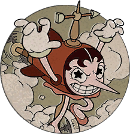

Hilda Berg
Hilda Berg is one of the bosses that appears in Cuphead. Her stage, Threatenin' Zeppelin, is unlocked when Cuphead finds the blueprint for an Airplane. She is the first shoot-em'-up boss in the game. Cuphead and Mugman fight her in the air, despite the entrance to the level being next to an observatory.
Appearance
Hilda Berg bares a rather stylized design to her physical appearance in contrast to a few of the other
females in the game.
She has a tall, slender figure appearing as a human-zeppelin hybrid (which is seen for a split second
before she eats the cloud which causes her to transform). She has pinkish, fair-colored skin and short
black hair in a finger-wave haircut with a prominent hair-line in the center. Her facial structure
consists of a long, pointed nose, thin black eyebrows, salmon eyelids, and three thin black eyelashes on
each eye.
Hilda's wardrobe is generally simple, with a zeppelin touch. She wears a red shirt with a darker lower
half, and crimson, puffy sleeves, as well as a pink skirt and matching ballet flats.
On the top of her head, Hilda wears a tan-colored weather vane with gold accents. She also wears simple
white opera-gloves and glowing gold bracelets.
As a true blimp/zeppelin, her body becomes the blimp's body with the same color scheme as her dress;
cherry-red and darker red and the main body, and crimson on the fins, while retaining her salmon skirt
and shoes. She now has a propeller on the back and a unicycle under her body, consisting of a tan
handle, grayish violet pedals, and a white tire with a single, yellowish patch.
Her constellation forms, Gemini, Taurus, and Sagittarius all have visible skin similar to her default
form, but with bodies made of clouds, gold accents on their accessories, and stars for pupils in their
eyes. The Gemini twins resemble female humanoid sirens sporting bikinis, Taurus resembles a general bull
with a large nose ring and is missing his rear legs, and Sagittarius resembles a masculine centaur with
a golden, luminescent tail and no legs to support his body.
In her second and final phase, she takes on the form of an enormous crescent (waning/waxing crescent)
moon with her face, strikingly similar to versions of the moon depicted as having a face in certain
popular culture.
The moon itself is entirely the same red color as her dress from her default form with several craters
on parts of it and the upper curve being longer than the lower curve, while possessing the same curls as
her hair on the area of her forehead.
In this form, Hilda's face is significantly more detailed, almost resembling that of a stereotypical
witch. Her eyes have visible, thick, black eyelash lines and matching eyelashes, and the now-visible
irises are shown to be two different colors; yellow on the outside and red on the inside. Her nose is
longer and noticeably curved in a zig-zag-like fashion and visible markings can be seen on her nose and
face.
Whenever she pops her face out to unleash her UFOs, several golden, steampunk-esque gears are visible,
indulging the one attaching her face to the moon itself.
When she is defeated, Hilda sags both her crescents and her nose (sputters and flails in Simple Mode).
Battle
Intro
Hilda Berg is first seen sitting on a cloud when she suddenly inhales it, turning her body zeppelin-shaped. It is also very hard to see Hilda on her cloud, as she swallows it almost immediately.
Phase 1
 "Fitting, isn't it? I'm a blimp -- you're a wimp."
—Hilda Berg, Phase 1 Blimp death screen
"Fitting, isn't it? I'm a blimp -- you're a wimp."
—Hilda Berg, Phase 1 Blimp death screen
In the first phase, Hilda Berg switches back and forth between her blimp and constellation forms, using
her blimp form three times and the constellation transformations twice.
In her blimp form, she flies up and down on the right side of the screen while small purple toy
zeppelins appear from behind her back to shoot a single bullet at players. Every 4th single bullet is
parryable. The second and third times she uses her blimp form, the green mini-zeppelins from the
constellation attacks appear as well.
She will attack every few seconds by laughing, which sends a physical onomatopoeia of her laughter
across the screen that can damage the player(s). The projectiles travels straight forward.
Constellations

Constellations
"You won't get too far... it's been foretold in the stars."
—Hilda Berg, Phase 1 Constellation death screen
After taking some damage as a blimp, Hilda Berg will begin using a new attack that will temporarily turn
her into a zodiac constellation, each with its unique attacks.
Hilda switches back and forth between her blimp and constellation forms until the player reaches her
second phase.
Hilda Berg will inflate with a deep breath, propelling herself across the screen's left edge, making a
constellation as the screen darkens. She will reappear, moving backwards to the right side. In a cloud
of smoke and stars when she goes through the constellation, she transforms into what is shown and uses
new attacks. Hilda Berg will transform into one of three constellations, which are as follows:
Taurus - Hilda Berg transforms into a huge horned bull made of clouds and stars. She still moves up and
down, but instead of spouting out onomatopoeia, Hilda will swiftly jab her horns across the screen every
few seconds, when the player is parallel to Hilda Berg. She will always use her Taurus form the first
time she transforms, but the following one(s) are random. She stops for a moment before she attacks.
This form is not used in Expert mode.
Gemini - Hilda Berg turns into a set of female twins that circle around a swirling crystal ball. They
will pause to raise their arms and make an incantation, summoning a vortex on the player's side of the
screen. The vortex will launch a line of bullets while rotating, forcing players to maneuver around it
to avoid damage. The vortex disappears after making a complete rotation. In Expert mode, the line of
bullets rotates faster.
Sagittarius - Hilda Berg becomes a masculine centaur with a bow and arrow that will shoot a giant arrow
across the screen. In addition, the launch will sprout a trio of homing blue stars. The stars can be
destroyed by the player's own bullets. This form does not appear in Simple mode. In Expert mode, the
stars home in for a longer time.
In Simple mode, her transformation will always be Taurus then Gemini.
In Regular Mode, her first transformation is always Taurus, but Sagittarius has a chance to replace
Gemini.
In Expert mode, her transformation will always be Gemini then Sagittarius.
In-between Transformations
After taking enough damage in each constellation form, Hilda Berg will return to normal for a short time
before transforming again. During this time:
Hilda may create and launch a mini-tornado that will home towards the player(s) before disappearing
off-screen.
Hilda will continue to use the laughter attack, spitting "HA" projectiles at the player.
In addition to the purple mini-zeppelins, new green-colored ones appear, and in increasingly greater
quantity. These small zeppelins will fire four bullets at once in a crescent shape towards players. In
Simple mode, the green toy zeppelins fire only three bullets. In Expert mode, they also appear at the
beginning of the fight and they fire five bullets with increased speed. Note that the green zeppelings
never have any parryable bullets.
After Hilda's second transformation, the green zeppelins will stop appearing, but the purple ones will
start to appear in pairs. In Expert mode, only the green zeppelins appear after Hilda's first
transformation, and they are paired up with the purple zeppelins after her second transformation.
After taking enough hits, Hilda Berg shudders and shakes erratically, groaning and yelling in pain. The
sky turns from evening to night, and Hilda Berg swirls around chuckling in a sinister way, transforming
into a massive crescent moon with her face.
In Simple mode, the fight ends with Hilda shaking, without entering the second phase.
Phase 2
"You lost too soon and I was only half moon!"
—Hilda Berg, Phase 2 death screen
In Hilda Berg's second and final phase, she fills up nearly half the screen, giving players much less
room to move around. Intermittently Hilda's face will spontaneously extend outward, causing damage upon
contact, as she grins while laughing psychotically. When she does this, golden steampunk-style gears are
shown from where her face popped out. During this phase, her pointy nose has no hitbox and can be
touched.
In this form, she cannot directly attack, but a line of UFOs will come out from the hole where her face
would be and attack with vertical laser beams. The different colors of UFO attack differently; Red UFOs
will not attack until the player is under them, and gold UFOs attack just in front of a player. In
Expert mode, the UFOs' lasers last longer. The UFOs have hitpoints and being shot at will generate
cards, but it is impossible to defeat one normally.
Finally, replacing the toy zeppelins are shooting stars that fly from right to left at fluctuating
speeds. Occasionally, a pink one will appear. In Expert mode, the stars fly much faster.
Once defeated, Hilda will have a dazed expression while her crescents and nose appear crippled and
broken.
Credits for information and images: Cuphead Fandom Wiki